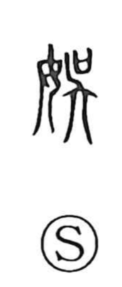

娯

Uncategorized
Kun: | On: go
to enjoy ・ amusement ・ pleasure
Explanation
娯 is a phono-semantic character formed with 女 and 呉 (吳) as its phonetic. In ancient forms, 呉 depicts a person holding a ritual vessel that contained written petitions to the deity, dancing and praying to delight the gods so that requests would be granted. The 女 element evokes the woman—likely a shaman—who officiated such rites. Inheriting the sense of 呉, 娯 came to mean enjoying, pleasing, and delighting.